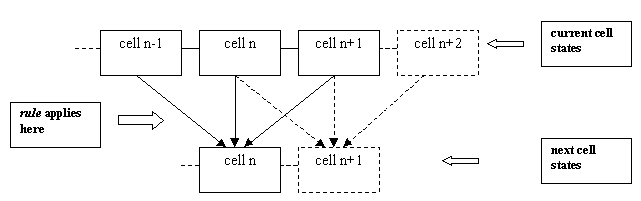
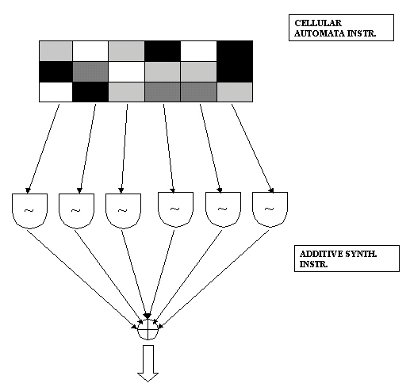
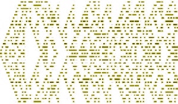
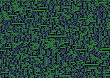
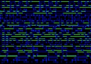
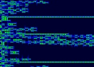
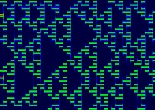
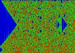

© by Josep M Comajuncosas / oct.-dec.´1998
Abstract
This paper describes how to implement a cellular automata as an algorithm in a Csound instrument for sound synthesis purposes. Other possible applications such as algorithmic composition are not studied. It is mainly concerned with one-dimensional automatas for simplicity, driving banks of oscillators for additive synthesis. Images, sound samples and code are included at the end of the article.
A (quick) introduction to Cellular Automata theory
A Cellular Automata consists of several single units, called Automatas or Cells, with an initial discrete state, which interact with its adjacent cells following a given rule to get their next states. In One-dimensional automatas you have a row of "cells" which, at every iteration, compute their next state based on their own current state and their neighbour´s state:

The possible variants include both the number of possible states and the number of neighbours taken into account.
For example, the 41 Cellular Automata I use assumes 4 possible states for each cell (0,1,2 and 3) and compute their values based on its own state and the states of the first cells located at their right and at their left sides.
Assuming cyclic contour conditions, I will consider the first and the last cells to be adjacent, thus getting a continuous cyclical space.
Usually you compute the next state by table lookup. In this way, you have a table storing the state assigned to every possible result in the computation. Let´s suppose a cell can have 2 possible states, 0 or 1. The maximum allowed result by adding a cell´s state with its first neighbour´s states will be of course 3. Other possibilities are 0,1 or 2. Thus some possible transition tables are
1000
0101
0110
for example, if you get a value of 2 in the computation, table lookup indexes the 3rd position in the table (starts with 0) giving 0,0 and 1 respectively.
In my 41CA there are 10 possible states (from 0 to 3*3=9), requiring a transition table with 16 memory locations (the nearest power of two).
The interest of Cellular Automatas is that such weak local constrains can give rise to large scale structures. Some of them will extinguish or generate chaotic patterns, buth some other show memory and perdurability of their initial structures, with a characteristic fractal behaviour (self similarity). This peculiarities are of evident musical interest.
The basic idea behind this instrument is to use the cell states from the CA as amplitude values for a bank of oscillators to create a CA-controlled additive synth. This obviously implies that both the Automata and the Additive Synth will have the same number of discrete units (one cell for each oscillator).

All the stuff runs in 3 separate instruments for clarity, simplicity and modularity. The communications between instruments is hold via the zak system.
You will need one location for the za space which is required to store the waveform generated by the Additive Synth. You will also need as many as 3 times the number of cell states in zk locations, to store both the current and the next cell states for each iteration, as well as to keep track of the phase increments for each oscillator in the additive synth.
The first instrument initialises the cells of the CA to some values stored in a table. Those values are not important for the long-term evolution of the Automata - at least in theory-, but they can be of great influence during the initial attack transient. It also initialises the phases of the oscillators to more or less random values. This (also in theory) should help to smooth the waveform amplitude, avoiding buzzing timbres and sharp peaks when dealing with harmonic textures and fast iterations.
This instrument is deactivated just after initialisation has been finished with a turnoff statement.
The second instrument runs the Cellular Automata. It is controlled by a timout statement which allow the cell computations to be done only once every icell_period seconds. It is therefore quite efficient. I assumed that all the cell transitions must take place syncronously. The instrument reads the cell values from the zk space; for each cell it adds the value of itself and the two neighbours and, via table lookup, it computes the resulting value which will be dependent on the transition rule selected by the user.
Several interesting tricks are necessary to run the Automata without problems, most of them related to the periodic contour conditions stated above.
Notice also that you will have to switch the pointers (here zk offsets) for each group of cell states at each iteration, the next state becoming the actual previous state, leaving the previous previous state location free to be filled with the next next state. Not much different from the update process in a delay unit in fact.
The third instrument is the additive engine. To allow a user selectable number of partials, you won´t find hundreds of oscil units here. Instead, it works quite similar to a Phase Vocoder resynthesis routine: it adds the instantaneous value of each oscillator to a common memory location - a za location. This value is computed accessing a sine table indexed by the current phase increment of the oscillator, wich is updated at every pass depending on the oscillator frequency as
kphase = kfactor * imin_freq/kr
and weighted by the cell state linked to that oscillator. Notice this process makes ksmps=1 necessary (as well as some conditionals and goto´s throughout the code), but it is anyway much more efficient and flexible thant an oscil´s bank. Of course you can acces any wavetable, not just a sine wave.
I had some troubles with the phase update, as it grew bigger and bigger and eventually the wrap feature in the table lookup access crashed. To avoid it I work always with the fractional part of the phase after adding the current phase increment
zkw frac(kphase+kprev_phase),kzkndx
A key feature of this design is the flexibility to map the frequencies of the oscillator bank. Once selected the lowest frequency (the frequency assigned to the oscillator nº 1), the next oscillators can be set to frequencies related to the fundamental either in an additive, a geometric or an exponential relationship.
The nomenclature might not be quite standard, so here you have the relationships used to calculate any frequency from the lowest frequency and the "stretch factor" (a factor used to scale the frequencies):
additive:
kfactor = (kzkndx+1)*istr
geometric:
kfactor pow kzkndx+1,istr
exponential:
kfactor pow istr, kzkndx
Additive and geometric mapping allow both harmonic and inharmonic textures to be created, even chorus effects with small istr factors. Exponential mapping makes it possible to set the oscillator frequencies to any equal-tempered scale, like the usual 12ET and 24ET scales, and also to any ET non-octaviant scale. Thus a great variety of textures can be created with just a single Automata.
Till now I´ve been using CA allowing up to 4 different internal states. As the Cell states control the amplitude tracks of the Additive Synth without further manipulation, severe amplitude quantisation happens. Of course the Cellular Automata is a discrete system, and this effect is inherent in its nature, but those clicks could be greatly reduced by implementing a CA with float values as the internal cell states and the transition rules. You won´t be able to test visually the Automata with Fractint before, at least by now, but anyway I suggest you to test the instrument with a spectrum analizer.
This implementation allows the use of tablei to access the transition rule. In theory the resulting waveform should be smoother provided the transition rule table avoids sharp transitions, but the results weren´t so impressive.
First of all a graphic from a 41 CA with rule 0020121303, in fact a sonogram of the rendered waveform made with a spectrum analizer. The most common morphology in this kind of Automata (triangular shapes) is quite notorius, as well as its fractal (self-similar) character. Note also how upper and lower edges are considered neighbours in this implementation:

You can compare the graphical output from a program like Fractint with the sonogram of a waveform generated from the same Automata (here with rule 1113110301). I hope you will be able to see their morphological similitudes:
|  |  |
In most cases the waveform generated is someway beetween the result of a morphing timbral texture and that of an algorithmic compositional process, due to the discrete nature of the automata, and to the fact that all the states are updated syncronously.
|  | These settings generate a fast moving microtonal (quarter-tone) cluster with 128 oscillators (not sinusoidal) controlled by an organic 41CA with rule 0201200331. mp3 sample here (with some compression). |
|  | With an harmonic texture extending from 60 Hz up to 2.5 KHz these settings simulate a robotic voice quite well, though with some annoying clicks. The 41CA rule used here is 0100102302 and shows a typical behaviour. mp3 sample here. |
|  | And finally, an inharmonic cluster with a CA being iterated at a quite fast rate. The initial cell states favours the extreme registers. After a clear attack transient the spectrum fills completely resulting in a rich and evolving texture. The rule used is 0112310231. mp3 sample here (with some reverb). |
Orc & sco
Here you can get the orchestra and score implementing the instruments discussed above.
Cellular orchestra
Cellular score